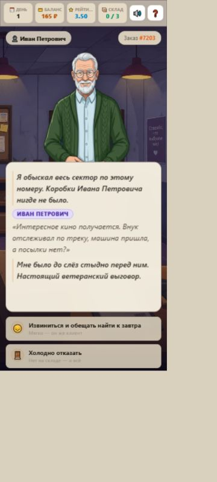
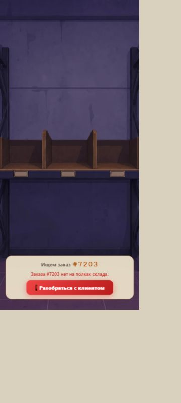

Вот как игра выглядела изначально
Настоящие скриншоты исходника из 12953278.zip. Рисованные персонажи, приглушённый фиолетовый фон и кремовые диалоги. Новые варианты не внедрялись в игру.


Что я бы подправил
- Читаемость. Обычное начертание вместо жирного курсива в длинных описаниях, более тёмные мелкие подписи. Убрать пустое место в панели; длинный текст раскрывать по нажатию.
- Кнопки. Сохранить форму и цвета игры, приглушить яркие градиенты. Одно основное действие выделять сильнее; отказ и завершение приёмки сделать спокойнее.
- Несколько деталей фона. В том же рисованном стиле добавить стеклянную дверь, объявления на скотче и дешёвый столик у выхода. Сохранить персонажей, старый рабочий стол и атмосферу.
Начал бы с текста и кнопок. Это улучшит удобство и сохранит характер оригинала.
Это снимки, а не новая сборка. Предложения ещё не реализованы. Исходный HTML сверён с архивом: совпадает байт в байт. Прежние дизайн-галереи остаются как история, выбор из них больше не требуется.